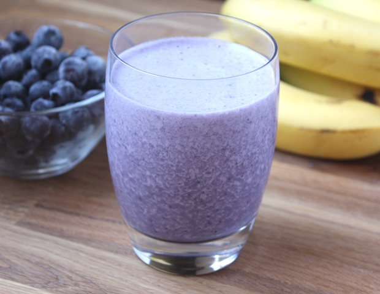
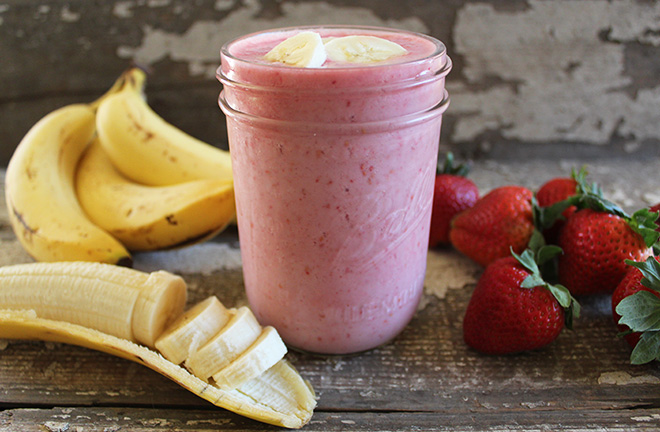

Fun recepies for different types of smoothies and juice or you can make your own!
BlueBerry Banana Smoothie |
300ml milk 1 banana handful frozen raspberries handful frozen blueberries 2 tbsp of oats/granola |
Pre Workout Smoothie |
Strawberries 1 Banana Milk Ice Yoghurt |
How about try and make your own!
|